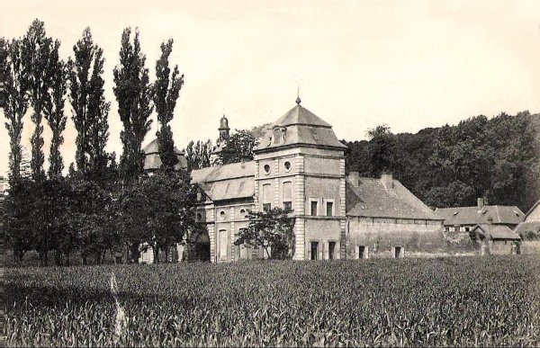
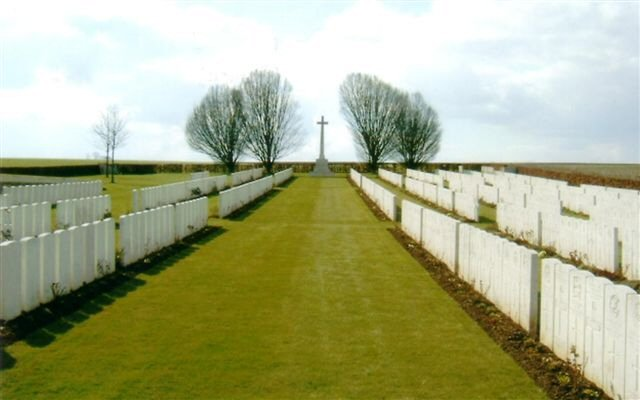
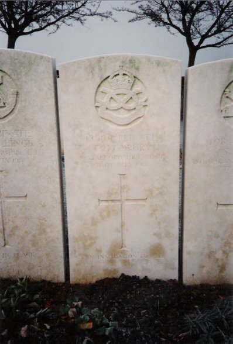
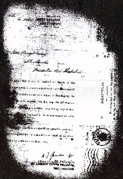
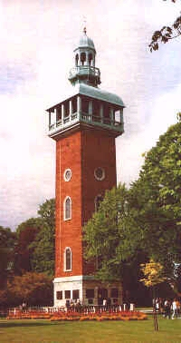
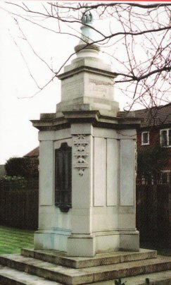
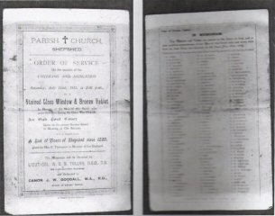

Having survived the duration Tom Drury was killed just 4 months before the end of the war in July 1918. He served as an officers cook at the Divisional Headquarters of the 46th Division at La Chartreuse, Gosnay near Bethune. On the evening Saturday July 6th the officers mess took a direct hit.

Tom would have been evacuated to one of the Casualty Clearing Stations at Pernes but he died of his wounds within hours. Tom was buried at the military cemetery at Pernes. Pernes-en-Artois is a small town on the main road from Lillers to St Pol. The British Cemetery is nearly one kilometre west of the town on the road to Sains-les-Pernes.
The cemetery was not begun until April 1918 when the 1st and 4th Canadian Casualty Clearing Stations arrived at Pernes, driven back by the German advance. In May, the 6th and 22nd Clearing Stations also arrived. Tom is one of 1078 burials.


Pernes British Cemetery Pas de Calais, France and Tom's gravestone inscribed "an inspiration to all" Grave Ref V. D. 49

DRURY - killed in France on July 6th, 1918, Tom Drury, aged 49 years.
Private Drury Killed
The news the Pte T Drury, of the Leicesters, was killed on Saturday last has been officially received by his wife. He was well known in Loughborough as a compositor and at one time his wife was caretaker of Emmanuel Schools. He joined the army in September 1914, the month after the outbreak of war. Writing to Mrs Drury, the Camp Commandant states that a shell destroyed the billet in which he was working. He was well thought of by officers and men by unfailing willingness to help, many times under trying conditions.
"AN INSPIRATION TO ALL"
Mrs Drury of Leicester Road, Shepshed has received news of the death of her husband, Pte Tom Drury, of the Labour Corp. He was a cook at headquarters division and a shell fell on the roof of the house and burst in the mess as he was preparing tea. He received injuries from which he died a few hours later. The lieutenant of his company writes that he was "well thought of by both officers and men with whom he came in touch for his unfailing willingness to help, many times under trying conditions." His Sergeant-Major also says: "His first thoughts were always of his duty and the welfare of the mess, and he was an inspiration to all." Pte Drury formerly lived in Loughborough and was employed by Messrs Clarke, printers. He enlisted in September 1914, in the South Staffs, in which he was for some time officers cook, and was transferred to the Labour Corp in the same capacity. He was 49 years of age and has a son serving in the Leicesters.

Tom's inscription on The Carrolin, erected as a memorial to Loughborough's fallen


Tom is also commemorated on a memorial erected to Shepshed's fallen

Tom was also commemorated at a service held at St Botolph's Church, Shepshed on 22 July 1922 and on a bronze plaque in the church.